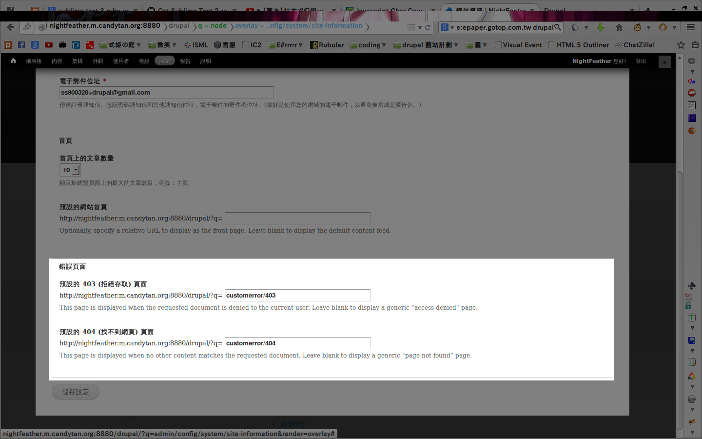

Chapter 10 - 首頁
附帶一提
From: 使用 Drupal 7 架站的 12 堂課
居然是阿舍大寫的 平時找資料多少都會找到他站上呢 ._.
大綱
- 網站資訊
- 網站選單
- 版型管理
- 調整版型
- 登入登出
10.1 網站資訊
網站的基本身家資料之類的 = 3=
網站資訊設定
設定 > 系統 > 網站資訊
- 網站詳細資訊
- 首頁設定
- 錯誤頁面
安裝 CustomError
呃.... 不知道怎裝的請舉手
修改 403 404 頁面對應設定

設定CustomError
設定 > 系統 > CustomError
<?php print "可以塞 php 喔 XD" ?>
還有自動導正功能
10.2 網站選單
網站一些功能的進入點
預設選單
結構 > 選單
- 管理列
- 使用者
- 主選單
- 導覽列
指定主選單
結構 > 選單 > 設定
雖然原本就有 其實也可以自己自訂一個
自訂選單
貌似裏面有東西跟前面的章節有關....
10.3 版型管理
人要衣裝佛要金裝 網站也要有個好外裝
版型設定
外觀 > * > 設定
- 調整顯示
- Logo設定
- 連結圖示 (Favicon)
管理用版型
表裡隔離 防患未然
版型權限管理
他叫我看 6.3 ﹨(╯▽╰)∕
10.4 調整版型
不可能有東西一做出來會合所有人的意 來改吧
page.tpl.php
Drupal 版型裡主掌版面內容的檔案
糟糕 這裡叫我嗑 Code 耶
因為這個佈景主題沒有地方給你設定首頁的投影片...
是說記得前面好像有佈景可以改？
style.css
前面那個是內容 而這個就是處理版面啦